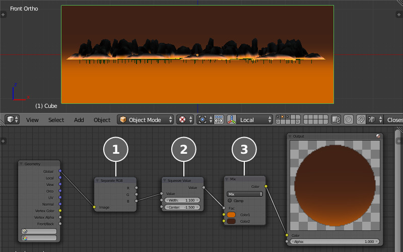
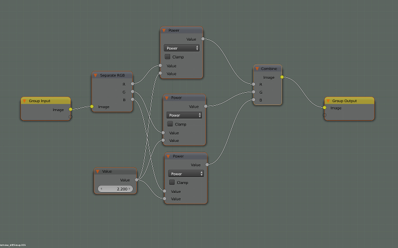

Node Materials¶
Shader nodes extend significantly the potential of Blender’s standard materials by means of presenting shading as a batch of basic transformations.
{kind=link}
Standard Nodes¶
All Blender functions are supported except the following cases:
Geometry- theLocal,OrcoandVertex Alphaoutputs are not supported.Material,Extended Material- no more than one node per material is allowed; theRefl,Ambient,SpecTrainputs are not supported; theAOoutput is not supported.RGB Curvesis not supported.Vector Curvesis not supported.
In addition a poor performance of some nodes in real-time context should be taken into account. It is not recommended to use the following nodes:
Hue/SaturationMixRGB- theBurn,Dodge,Value,Saturation,Hue,Colortypes.
It is not recommended to create very complex materials especially if they use many Geometry or Texture nodes.
Engine Specific Nodes¶
Engine-specific nodes extend functionality of the standard nodes to support extra features. These nodes are created as node groups (Node groups or Node tree) with specially determined names and input formats. For convenience, all special nodes are added to a blend file when it is opened.
See also
B4W_LINEAR_TO_SRGB and B4W_SRGB_TO_LINEAR¶
Color correction from linear color space to sRGB space and back.
{kind=link}
See also
B4W_REPLACE¶
The node replaces the inputs depending on the working environment (i.e. Blender viewport or Blend4Web). When working in Blender the Color1 input is connected to the Color output and the Color2 input is ignored. On the contrary when working in the engine the inputs are interchanged (the Color1 one is ignored and the Color2 one is connected to the output). The node is intended to display one node structure in the viewport and another - in the engine.
{kind=link}
As a rule it is used for normal mapping. Blender’s node materials do not support a tangent space of coordinates. Therefore the only possible method to display normal maps in the viewport correctly is their usage inside the Material nodes.
B4W_CLAMP¶
The node limits the output value. As a result all the output vector components take values from 0 to 1 inclusive.
B4W_TIME¶
Provides the timeline counting from the engine start (in seconds). May be used for animating any parameters in the node materials.
B4W_VECTOR_VIEW¶
The node transforms a vector into the camera’s space of coordinates. Transformation is necessary because the engine defines most of vectors in the world space of coordinates. If normal vector is being transformed by this node it should be used only for effects and not for connecting to the output of the Material or Extended Material nodes.
B4W_PARALLAX¶
The node implements the texture coordinates offset using a height map.
Input parameters¶
- UV
Source texture coordinates
- Height Map
RGBA texture with a height map packed into the alpha channel.
- Scale
Texture coordinates offset factor
- Steps
The number of steps for iterative generation of texture coordinates offset. The bigger this value is the better is the final quality.
- Lod Distance
Maximum distance from camera at which the effect is observed.
Output parameters¶
- UV
Resulting texture coordinates which are used as input for the texture nodes.
B4W_TRANSLUCENCY¶
The node implements a translucency effect (with respect to light sources only) for thin objects such as cloth, leaves, paper etc. The effect consists of two parts: 1) brightening of the object side which is opposite to the light source and 2) appearance of a light spot right in the light source place.
Input parameters¶
- Color
One-channel texture which defines material heterogeneity - the white color denotes maximum translucency effect while the black color denotes its absence. White color is used by default.
- Backside Factor
Material color correction coefficient for the side which is opposite to the light source. It describes the color richness effect for the translucent areas.
Backside Factor < 1 - brightening
Backside Factor = 1 - no correction
Backside Factor > 1 - darkening
The default value is 1.
- Spot Hardness
Light spot blurring factor. The bigger this value is the smaller is the spot and the sharper are the spot edges. The default value is 1000.
- Spot Intensity
Light spot intesity. The bigger this value is the brighter is the light spot. The default value is 1.
- Spot Diffuse Factor
Material diffuse color influence on the light spot color.
Spot Diffuse Factor = 0 - the light spot has the diffuse color
Spot Diffuse Factor = 1 - the light spot color is white
The default value is 1.
Output parameters¶
- Translucency
The output should be connected to the
Translucencyinput of theExtended Materialnode.
Note
This node can work incorrectly, if the mesh normals were edited.
B4W_REFRACTION¶
Get the refracted image behind object.
Input parameters¶
- Normal
Normal map for adding perturbations.
- Refraction bump
Value of perturbation strength.
The default value is 0.001.
Output parameters¶
- Color
Rendered texture behind object with perturbations.
Note
It’s neccessary to enable the Render refraction option from the Scene > Blend4Web panel. The object’s transparency type must be set to Alpha Blend.
See also
B4W_LEVELS_OF_QUALITY¶
This node sets output color value depending on the quality profile.
See also
Input parameters¶
- HIGH
Node links this parameter to
Colorparameter in case of high and maximum quality usage.- LOW
Node links this parameter to
Colorparameter in case of low quality usage.
Output parameters¶
- Color
Output color.
Note
HIGH input parameter is used for rendering in the Blender viewport.
B4W_SMOOTHSTEP¶
Perform smooth interpolation between two input values based on first value.
Input parameters¶
- Value
Value which determines interpolation smoothness.
- Edge0
First interpolation value.
- Edge1
Second interpolation value.
Output parameters¶
- Value
Interpolated value.
Note
For the correct interpolation input ‘’Value’’ had to be between ‘’Edge0’’ and ‘’Edge1’‘.
B4W_GLOW_OUTPUT¶
Applies the Glow effect to the node material. Besides the B4W_GLOW_OUTPUT node, the node material should have the Output.

Input parameters¶
- Glow Color
Glow color.
- Factor
Glow ratio. Factor \(\in [0, 1]\).
Factor = 0 - no glow.
Factor \(\in (0, 1]\) - there is a glow, colored with Glow Color.